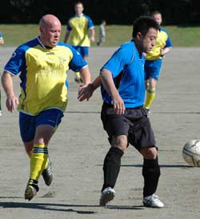
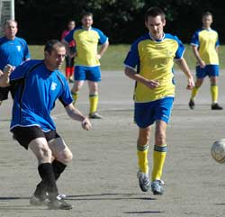
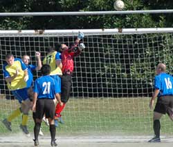
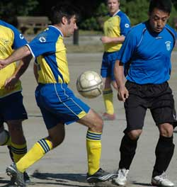
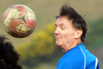

|
Oi Futo, Saturday 1st November
I always feel constrained by this front page teaser format, where you feel obliged to give the game result and a one-sentence summary for the short-attention-span readers when the riff you're working on for the match report might run on and take too many of another game's column inches. So for those with a short attention span, it was Tirelessly Unpredictable Tokyo Bay Breeze 5, Unforgivingly Bouncy Oifuto Pitch 4, Albion Old Boys 3, Wall Street Clash 2, Beautiful Game 0. For those with a bit more time on your hands, click here...
Now...In their low-life personae of Derek and Clive, Peter Cook and Dudley Moore once famously reminisced about the worst jobs they'd ever had. Clive reckoned his was pulling lobsters out of Jayne Mansfield's bumhole. Derek countered by recalling his time as the bloke who had to clean up Winston Churchill's phlegm and nose bogies. Now while I'd admit that neither of these would qualify as my dream job, I think either of them would be preferable to the job of playing central midfield for an over-35s team on the windy acres of Oifuto 1.
So before we go any further I'm going to suggest a warm round of applause for Rod Cramblit, James Moon, and Karl Twohig, whose combined age would stretch so far into three figures that many languages less sophisticated than English would not bother to have a number for it, for leading the Old Boys to a very narrow victory in the one area of the pitch that really mattered in a game like this.
Old Boys skipper Karl gave his pre-match team talk with a nasty-looking red welt on his cheekbone, having just been whacked across the face by the TML rulebook for failing to give the required 24 hours notice that his team were to give debuts to two new players, Cilio from Brazil and Cyrille from France. So for some of the older Old Boys the one-point penalty gave the game a nostalgic feel, only two points to play for and at best a chance to grind a place or two up the table rather than leapfrog up into title contention. For those of us long exiled from the UK the time warp continued as the game took shape, with the Wall Street team imposing on the opposition a very English-style, high-tempo, direct game, with a level of pace and penetration that totally belied their poor form line so far this season.
The Old Boys should've known better than to try and match this, but like the aging Ali going toe-to-toe against the whippersnapper Ken Norton when he should've been jabbing and moving, the Old Boys failed to make it it their kind of contest, and spent the vast majority of the game on the backfoot as a result. Nevertheless it was Albion who struck first halfway through the first half, as some neat work down the left got the ball into Old Boys striker Hitoshi Ono inside the opposition box but right on the byline. With what's left of this reporter's eyesight, trying to work out what happened next from my vantage point on the halfway line was like trying to look up into the Birmingham nighttime sky and follow the course of the golf ball Apollo 14 skipper Alan Shepard's 5-iron hit on the moon, but I'm reliably informed that he (Hitoshi, not Alan Shepard) squeezed past a defender or two and banged in an unlikely goal from a ridiculous angle. One nil at half-time to the aging agarophobes.
Second half, and once again the Old Boys seemed to spend more time without the ball than with it. But sometime amidst all the chasing they found time to set Hitoshi through again with only the keeper to beat. His chip over the advancing custodian needed following up, and the ensuing footrace between the striker and the pursuing defender ended with the man in blue looking more like a bluefin tuna as he was bundled up into the netting. Ref gave the penalty and Hitoshi untangled himself sufficiently to put it away. But the two-goal advantage didn't last long as some neat Wall Street interplay gave them a man over at the edge of the box. The shot was eminently saveable, but Kouka got his angles all wrong and ended up doing some kind of matador impersonation as he oléd the ball into the net. The Old Boys then restored their two-goal cushion with the best move of the game, several neat passes that ended with Naoki Ogasawara firing home a low shot, but the Clash refused to give it up, dragging the score back to 3-2 when the Albion defence failed to deal with a set play.
But in the end the geezers managed to hang on for the two measly points on offer, and then raced for the Hobgoblin faster than any of them had moved during the game, because being hopelessly susceptible to any form of advertising involving alcohol, staring at the sponsor's name on the Clash shirts for 90 minutes had worked them up into a ferocious thirst.
Match report by Terry Cooney
|